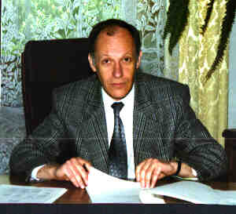

|

|
POWER LAWS IN CRITICAL AND OFF-CRITICAL SYSTEMSJózef SznajdInstitute of Low Temperature and Structure Research, Polish Academy of Sciences1.Phase Transitions: From early Universe to Ice Cube. The evolution of the description of the phase transitions from singularities in the thermodynamic potentials via symmetry breaking to the divergence of the scale-length is presented. The origin of the power laws at the critical state is discussed.2.Power laws – Saint Graal of the complex systems science. The power laws occurring in economy, sociology, and biology are reviewed. 3.Linear perturbation renormalization group (LPRG). The linear renormalization-group transformation is proposed to study critical temperatures and temperature dependence of the thermodynamic values (free energy, specific heat) of the weakly interacting spin chains. The transition temperature of the uniaxial Heisenberg ferromagnet in the field perpendicular to the easy axis is found. It is shown that only for very small fields and the anisotropy strong enough this temperature is shifted according to h2 as predicted within mean-field-approximation. 4.Power Laws in Off-Critical Systems: a.Ising strips (finite system); b.Spinless fermion chain; c.Social validation model. See also: 1. Sznajd J, Introduction to the modern theory of phase transitions in: Patterns of Symmetry Breaking, NATO Science Series, II Mathematics, Physics and Chemistry–vol. 127, and ref. therein. 2. Drzewinski A, Sznajd J, Szota K, PHYS REV B 72 (1): art. no. 014441 JUL 2005. 3. Sznajd J, Becker KW, J PHYS-CONDENS MAT 17 (46): 7359-7370 NOV 23 2005 4.Sznajd-Weron K, Sznajd J, PHYSICA A 351 (2-4): 593-604 JUN 15 2005 Personal webpage |